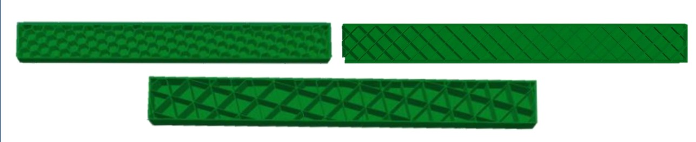

01 · Brief
Testing how 3D printed infill geometry changes structural response.
This project investigated how infill geometry affects the bending and tensile behavior of 3D printed PLA specimens. Grid, honeycomb, and triangular infill patterns were printed at 10 percent infill and compared under four-point bending and uniaxial tension.
The work used Digital Image Correlation to measure strain fields and MATLAB data reduction to estimate compressive and tensile elastic moduli, fracture behavior, and print-time tradeoffs.

02 · Problem
Infill patterns create internal load paths that simple material assumptions miss.
A 3D printed part is not a uniform solid. Its internal geometry controls how load moves through the part, how stiffness develops, where stress concentrates, and how failure begins.
That made experimental testing important. The same material and nominal infill density can behave differently depending on whether the pattern is grid, honeycomb, or triangular, especially when bending and tension stress the part in different ways.
The key question was not which pattern was strongest in general, but which geometry performed best for each loading mode and whether the result justified the added print time.
03 · Approach
Using bending, tensile testing, DIC, and MATLAB reduction to compare patterns.
- Printed PLA specimens with grid, honeycomb, and triangular infill geometries at consistent 10 percent infill settings.
- Performed four-point bending tests and uniaxial tensile tests using a controlled load frame.
- Used Digital Image Correlation to measure full-field strain over the specimen test sections.
- Reduced DIC and load-cell data in MATLAB to calculate compressive and tensile elastic modulus values.
- Compared fracture load, stiffness, failure location, and normalized manufacturing time across infill geometries.
- Interpreted inconsistent fracture results by considering print defects, clamp-interface failure, and DIC quality limitations caused by speckle delamination.
04 · Outputs
What the project produced.
- A comparative dataset for PLA specimens with grid, honeycomb, and triangular infill patterns.
- Bending results showing honeycomb produced the highest compressive modulus, while grid produced the lowest stiffness values.
- Tensile results showing triangular infill produced the highest tensile modulus in the tested specimens.
- Print-time comparisons showing honeycomb generally required more manufacturing time than the other patterns.
- Failure observations showing fracture loads varied significantly, especially near the transition between clamped and test regions.
- A final report and poster summarizing experimental setup, DIC strain fields, MATLAB reduction, results, and limitations.
05 · Takeaways
What I took away from the project.
This project strengthened my ability to interpret experimental data rather than just report numbers. The stiffness trends were meaningful, but the fracture results showed how defects, boundary conditions, and failure location can dominate printed-part behavior.
It also gave me a better appreciation for additive manufacturing as a structural design problem. Infill geometry can reduce weight and tailor performance, but printed parts still need careful testing before they can be trusted in load-bearing applications.